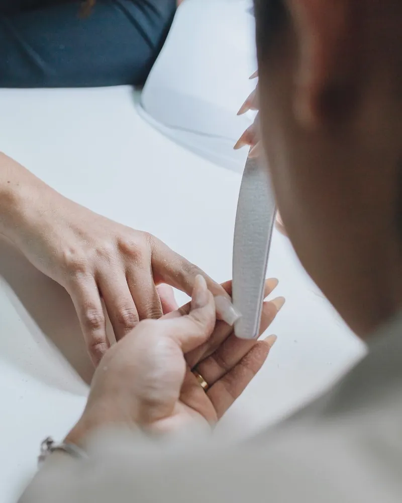
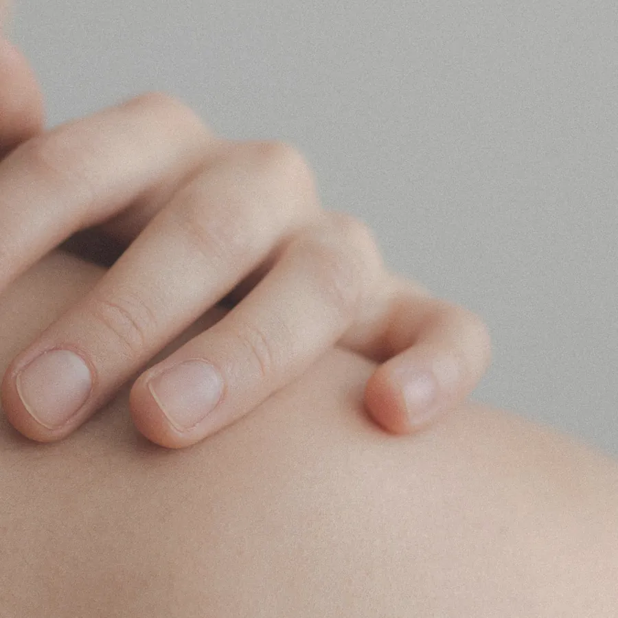
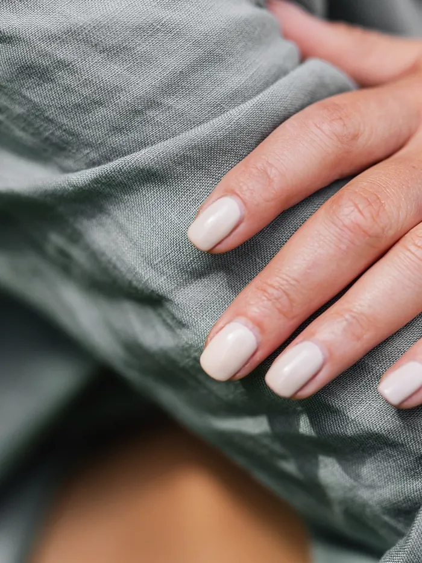
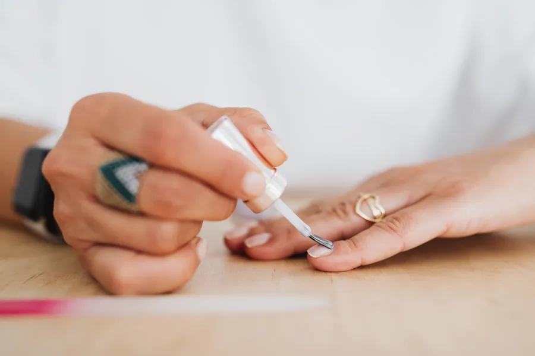
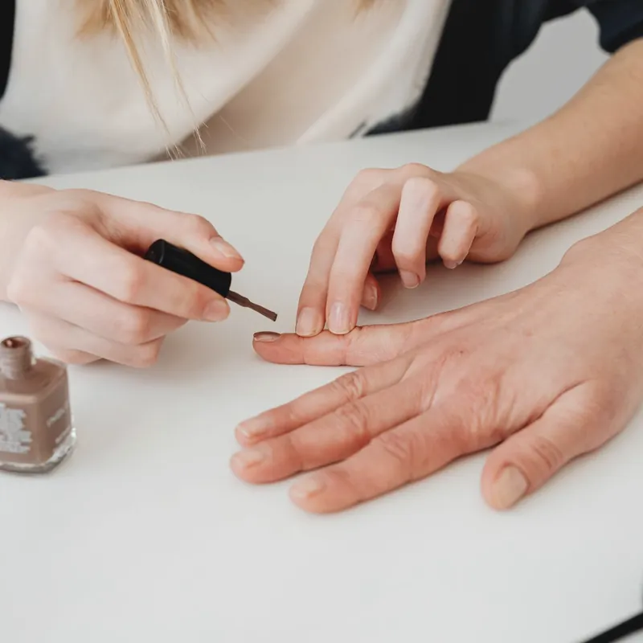
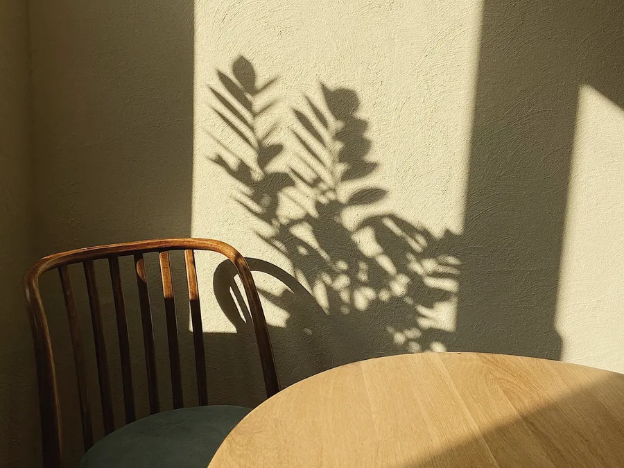

オフで削る量を
減らす付け替え

ジェルの状態を確認し、密着しているベースを残して付け替える方法です。浮いた部分や表面は整え、状態によっては全体をオフします。
Grow,as you are.
薄い爪・二枚爪・深爪のための
自爪育成ネイルサロン
兵庫県〇〇市・女性専用
甘皮・保湿ケア込み毎回同じ担当者
LINEで初回予約初回 90分 ¥7,480（税込）少し疲れた日も
ふと手元を見て
気持ちが整うように。
やさしく整えて
あなたの爪が
あなたの爪のまま
きれいになっていくように。
そんな願いから
shizuku は生まれました。
Your nails, as they are.
ジェルで薄くなった爪も、噛んでしまう深爪も。爪をいたわるケアで、ゆっくり育てていきます。
自爪育成とは 色を塗る前の爪そのものを、削りすぎず・乾かさず、健やかに伸ばしていくお手入れのことです。
爪をいたわるケアのことCare


Trouble
毎日の扱い方を、一緒に振り返ります。

友だち追加のあと、ひとことで大丈夫です。
明るいところで撮った写真があると、当日がスムーズです。
住宅街の一室なので、ご予約の方にだけお伝えしています。
爪の状態と生活を聞いてから、ケアに入ります。聞くだけでも大丈夫です。
3〜4週間後が目安。通う・通わないはそのとき決めてください。
はじめまして、shizuku の村上さやです。ネイリスト歴11年。サロン勤務のころ、ジェルの付け替えで薄くなっていく爪を見て、爪をいたわるケアを学び直しました。
2022年、自宅の一室でこのサロンを開きました。お客さまはひとりずつ。爪の小さな変化を、いちばん近くで見守ります。
3〜4週間ごとに通って4か月。爪の白い部分が見えるようになり、書類を渡すときに手を引っ込めなくなりました。
水仕事のあとの保湿を教わって、家でも続けました。二枚爪をくり返していた爪が、いまは先まで伸ばせます。
仕事で伸ばせないので、ケアだけで通っています。3か月で手触りが変わり、短いままでもきれいと言ってもらえました。
上記は架空のお客さまの声です。実際の体験談ではありません。個人の感想であり、効果を保証するものではありません。
はい。ジェルの種類と状態に合わせてオフします（+¥1,650）。初回ケアと合わせて税込¥9,130です。所要時間は予約時にご案内します。
個人差がありますが、3〜4週間ごとに通う場合、2〜3か月で手触りの変化を感じる方が多いです。爪が根元から生え変わるには半年ほどかかるので、まずは3回を目安にご案内しています。
もちろんです。色を付けないケアメニューもあります。お仕事で色を付けられない方もご相談ください。
自宅の一室のため、女性専用にしています。お子さまはご相談ください。
施術は医療行為ではありません。変色や痛みなど疾患が疑われる場合は、先に皮膚科の受診をおすすめしています。
ジェルでかぶれたことがある方、爪や皮膚に炎症がある方はお受けできないことがあります。妊娠中・授乳中の方、服薬中の方は、ご予約前にお知らせください。
